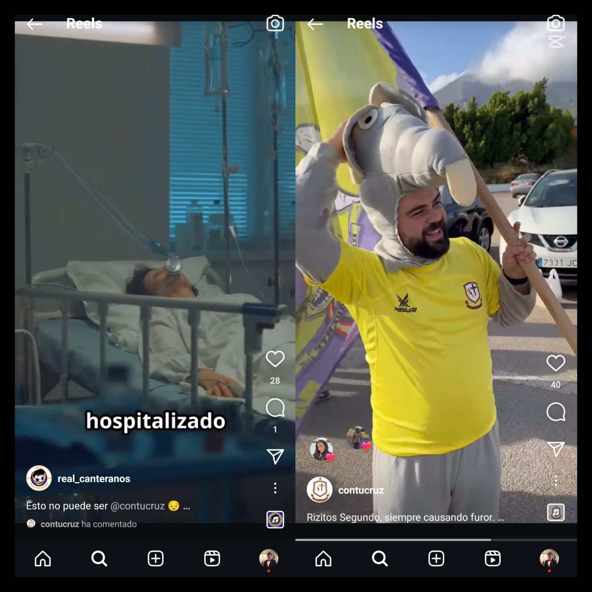
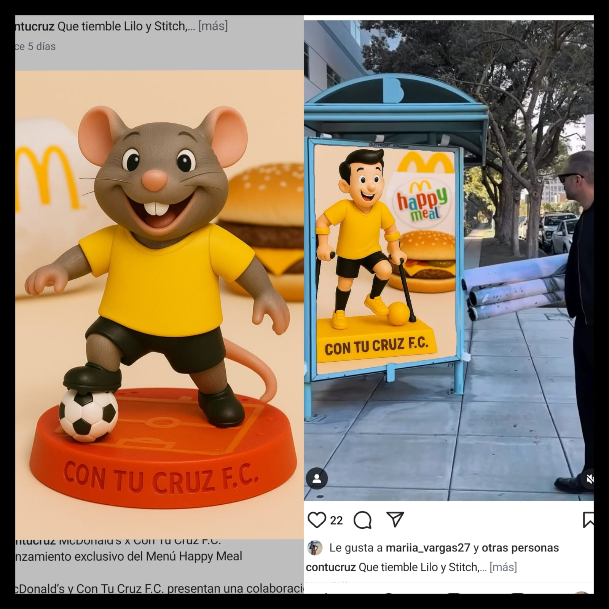
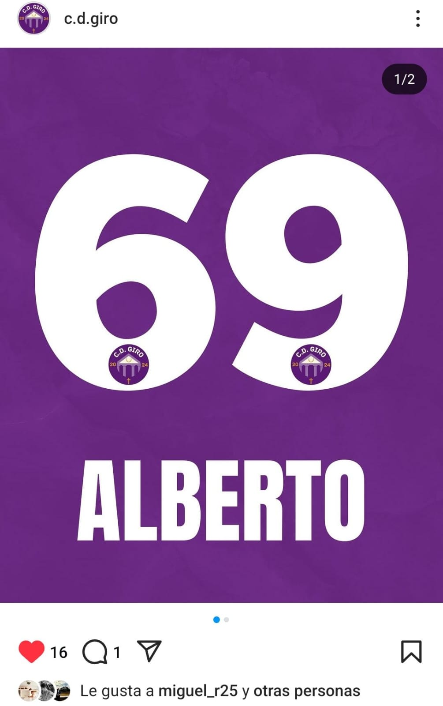

📰 Últimas Noticias del Torneo Morao
Un jugador de Real Canteranos intoxicado tras ingerir el Happy Meal de Con Tu Cruz F.C.
02 junio 2025
Esta mañana, nuestro corresponsal en Málaga, acudía al Hospital Virgen de la Victoria para comprobar el estado de salud de uno
de los integrantes de Real Canteranos, quien se había intoxicado tras ingerir un Happy Meal de la colaboración de la entidad americana McDonalds con
Con Tu Cruz F.C.
Aunque el paciente se encuentra en estado estable, se temía por su salud durante las primeras horas de la intoxicación. Tras pedir explicaciones
el presidente de Real Canteranos, la cuenta oficial de Con Tu Cruz F.C. declaró lo siguiente: "Las hamburguesas las hace la Rata. No entiendo qué ha podido pasar".
Estas declaraciones no han sentado bien en el entorno de Real Canteranos, que emprenderá medidas legales y elevarán el caso por un supuesto atentado
contra la salud pública.
Equipos como CD Giro, Tromponetas F.C. y Totys Femenino han decidido mantenerse al margen hasta que salga una resolución judicial.

Lanzamiento exclusivo Menú Happy Meal McDonald's x Con Tu Cruz F.C.
01 junio 2025
Esta semana hemos podido saber del lanzamiento exclusivo que el equipo militante del torneo 2025, Con Tu Cruz F.C., ha lanzado en
colaboración con la empresa estadounidense, McDonald's, un nuevo Menú Happy Meal , "una edición especial que une el sabor clásico con la pasión por un fútbol diferente",
como así indica el lema.
Cada uno de estos menús incluirá una figura de Rizitos y Cruzalino, figuras valuartes de esta entidad. Esta promoción estará disponible
por tiempo limitado en el McDonald's de Villafranco del Guadalhorce.
Según hemos podido saber, hay equipos tramando campañas para desincentivar su compra y así perjudicar financiaramente a la entidad alhaurina.

Polémica con el dorsal de un jugador del CD Giro
01 junio 2025
Hace unos pocos días el Club Deportivo Giro mostró en redes sociales los jugadores de la plantilla actual de este año, así como de sus dorsales.
No parecía haber ningún problema hasta que observaron cómo uno de sus jugadores, Alberto Ramírez, escogió el dorsal 69 para representar a su equipo.
Aunque según ha declarado en rueda de prensa este jugador: "No veo el problema, escogí este número porque el 6 y el 9 son mis números favoritos", muchos jugadores de la competición
han mostrado su rechazo a esta elección, fuentes de Con Tu Cruz F.C. han filtrado que jugadores en los entrenamientos han mencionado frases como las siguientes: "Lo que no sabe
este chaval es que 69 van a ser los goles que les vamos a marcar como nos emparejen contra ellos".
Mucha crispación en los días previos al torneo, aunque los directivos de
ambos equipos tratan de restarle importancia al suceso.
